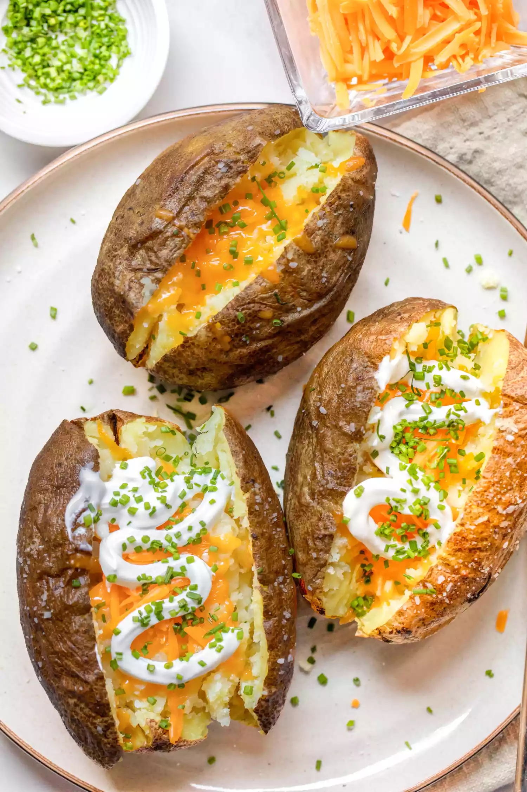

Microwave Baked Potato

Description
It’s hard to improve on the baked potato except for one factor: time. This microwave baked potato recipe takes a fraction of the time and is just as delicious.
Ingredients
- 1 large (10 to 12-ounce) russet potato
- 1 teaspoon olive oil, optional
- Pinch of kosher salt, optional
- 1 tablespoon butter
- 1/4 cup shredded cheddar cheese
- 1 tablespoon sour cream
- 1 teaspoon minced chives
- Salt and pepper, to taste
Steps
- If you would like a crispy skin on your baked potato, preheat the oven to 450°F. Scrub the potato well. Dry it off and poke it a few times on all sides with a fork.
- Place the potato on a microwave-safe plate and microwave it for 8 to 12 minutes, flipping it once halfway through. For a medium-large potato cooked in a 1,000-watt microwave, the cook time will be about 10 minutes. Your potato will be steaming hot when it is done. Press on it a bit with your thumb and it should give easily to pressure. You should be able to pierce it through the center with a fork or paring knife with little resistance. If it feels firm at all, place it back in the microwave for 1-2 minutes longer.
- If you would like a crispy, salty skin on your potato (my favorite), coat the microwaved potato on all sides with olive oil and sprinkle with salt. Bake until the skin is cracking and crispy, about 10 minutes.
- Slice down the length of the hot potato halfway through to expose the interior. Top with your choice of toppings while hot, such as butter, cheese, sour cream, and/or chives. Season with salt and pepper to taste. Store leftovers in an airtight container in the fridge for up to 3 days. You can reheat in the microwave, but I prefer to reheat the potatoes in a 400°F oven for 10 minutes so they get crispy on the outside.